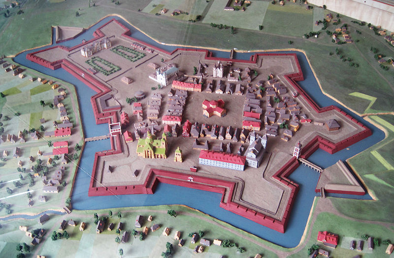

Іва́но-Франкі́вськ (раніше — Станиславів, Станіслав[4]) — обласний центр Івано-Франківської області, економічний і культурний центр Прикарпаття, одне з найбільших міст Галичини.
З 1662 до 1772 року і з 1918 до 1939 року мало назву Станиславів (пол. Stanisławów), з 1772 до 1918 року — Станіслав (нім. Stanislau). З 1939 року радянською владою було повернуто австрійську назву Станіслав, а 9 листопада 1962 року з нагоди 300-річчя місто було перейменовано у Івано-Франківськ на честь видатного письменника Івана Франка. Більшість мовознавців і жителів міста відзначає, що нова назва міста була дана радянською окупаційною владою з порушенням правил української мови і за політичними мотивами. Тодішня партійна номенклатура не хотіла, щоб назва міста асоціювалася із іспанським диктатором Франциско Франко, який був ворогом СРСР.
Місто утворилося на місці двох сіл — Заболоття (1437) та Княгинина (1449).
Дата заснування міста точно не визначена, проте достеменно відомо, що 1662 року Станиславів отримав магдебурзьке право. Цей рік і вважають офіційною датою заснування міста.
1654 року краківський воєвода і великий коронний гетьман Станіслав Ревера Потоцький викупив землі нинішнього міста в родини Жечковських для спорудження тут фортеці проти набігів кримських татар та свого опорного пункту на Галицькій землі. Його іменем і назвали місто. Син Станіслава «Ревери» — Анджей — обніс місто валами та муром. Він запросив в місто вірменських купців з Молдавії і Угорщини, щоб сприяти розвитку торгівлі.
Місто-фортецю спорудили в 1661–1662 за короткий термін (5 місяців) за проектом Франсуа (Франческо) Корассіні з Авіньйона у формі шестикутника з додатковими бастеями, редутами і фортом, що оточував власне замок Потоцьких. На вістрях шестикутника розташовувались бастіони — зовнішні додаткові п'ятикутні укріплення, що дозволяли здійснювати флангуючий мушкетний обстріл вздовж стін. Поперечний розріз стін складав земляний вал (насип) завширшки 20-30 метрів, зміцнений ззовні дубовими колодами.
